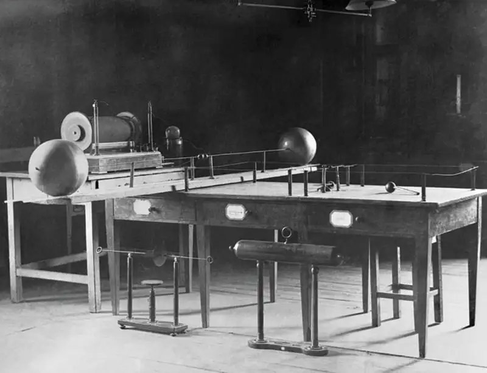
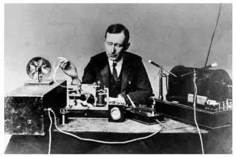
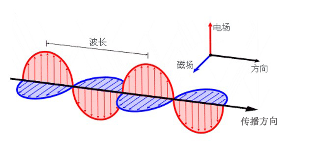

业余无线电爱好者社区
连接全球无线电爱好者，探索无限通联可能
无线电的用处与如何接触
无线电技术在现代社会中有着广泛的应用，从通信到应急响应，再到业余爱好，无线电无处不在。以下是一些无线电的主要用途以及如何开始接触无线电的建议。
无线电的主要用途
- 通信：无线电是远距离通信的重要工具，尤其是在没有网络覆盖的地区。
- 应急响应：在自然灾害或紧急情况下，无线电是可靠的通信手段。
- 业余爱好：业余无线电爱好者通过无线电进行全球通联，探索技术的乐趣。
- 科学研究：无线电波用于天文观测、气象监测等领域。
如何开始接触无线电
- 学习基础知识：了解无线电的基本原理和法规，推荐阅读相关书籍或在线课程。
- 获取执照：在大多数国家，操作无线电设备需要考取业余无线电执照。
- 购买设备：从入门级的手持对讲机开始，逐步升级到更专业的设备。
- 加入社区：参与本地或在线无线电爱好者社区，交流经验和技术。
如果您对无线电感兴趣，欢迎加入我们的社区，与全球无线电爱好者一起探索无限通联的可能！ 点击这里了解更多联系方式。
你不是一个人
在业余无线电的世界里，你永远不会孤单。无论你是初学者还是资深爱好者，全球有成千上万的无线电爱好者与你一起探索、学习和分享。

加入我们的社区，与来自世界各地的无线电爱好者交流经验、分享技术，共同探索无线电的无限可能。
“无线电不仅是一种技术，更是一种连接世界的方式。”
全国中继
点击查看全国中继中继的作用
中继站是无线电通信中的重要设施，它能够接收信号并将其转发到更远的距离，从而扩展通信范围。中继站通常安装在高处，如山顶或高楼，以确保信号覆盖更广的区域。
通过中继站，无线电爱好者可以在更远的距离内进行通信，尤其是在地形复杂或障碍物较多的地区。中继站不仅提高了通信的可靠性，还为紧急情况下的通信提供了重要支持。
小电波大世界
无线电最早出现在
无线电的起源可以追溯到19世纪末。最早的无线电实验由多位科学家共同推动，包括海因里希·赫兹（Heinrich Hertz）和尼古拉·特斯拉（Nikola Tesla）。赫兹在1887年首次通过实验证明了电磁波的存在，这为无线电技术的发展奠定了基础。
赫兹的实验展示了电磁波可以在空气中传播，并且可以被接收器检测到。这一发现为后来的无线电通信提供了理论支持。
无线电的发明
无线电的发明通常归功于意大利发明家古列尔莫·马可尼（Guglielmo Marconi）。1895年，马可尼成功实现了无线电信号的远距离传输，并在1901年首次跨越大西洋发送了无线电信号。
马可尼的发明彻底改变了全球通信方式，使得远距离通信成为可能。他的工作为现代无线电通信技术奠定了基础。
无线电的原理
无线电通信的基本原理是利用电磁波在空气中传播信息。发射器将声音或其他数据转换为电磁波，通过天线发射出去；接收器则通过天线接收这些电磁波，并将其转换回原始信息。
无线电波的频率范围非常广泛，从低频（如AM广播）到高频（如Wi-Fi和卫星通信）。不同频率的无线电波适用于不同的应用场景，例如广播、电视、手机通信和卫星导航等。
慢扫描电视(SSTV)
什么是SSTV？
慢扫描电视(Slow Scan Television)是一种通过无线电传输静态图像的技术，常用于业余无线电通信。它能在窄带宽条件下(通常3kHz左右)传输图片，特别适合远距离通信。
技术特点：
- 传输时间：约8-110秒/张(取决于模式)
- 常用模式：Scottie, Martin, Robot等
- 典型频率：14.230 MHz(20米波段), 3.845 MHz(80米波段)

立即加入社区
加入QQ交流群
小电波大世界
微信交流群
扫码加入微信群，有效期7天，过期联系xzm2013@outlook.com